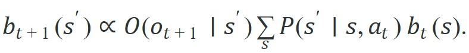

"The agent cannot see the whole state, cannot wait out the horizon, cannot explore into failure, and cannot collect mistakes for free. Each of these alone is a hard problem; embodiment serves them together."
Section 1.7
This section builds directly on the controlled Markov process and closed-loop interaction model introduced in section 1.1. Each obstacle named here has a dedicated treatment later in the book: partial observability and belief-state filtering in section 2.7 and Chapter 8, credit assignment and value estimation in Chapters 15 through 18, safe exploration in Chapters 23 and 24, and sim-to-real transfer in Chapters 13 and 20. Section 1.8 provides a complete map from each obstacle to its corresponding part of the book.
A warehouse robot misses a small box hidden behind a pallet, spends forty steps searching the wrong aisle, and finally collides with a shelf it cannot afford to knock over. Every word of that sentence names a distinct obstacle: hidden state, long horizon, irreversible consequence. These four obstacles (partial observability, long horizons, safety constraints, and the cost of real-world data) are why embodied AI remains hard despite superhuman performance on static benchmarks. They compound, as Figure 1.7A traces: hidden state lengthens the effective horizon, long horizons inflate learning variance, high variance demands more data, and more data means more physical risk. By the end of this section you will be able to name which obstacle dominates any given task and identify the matching technique from the rest of this book.
The difficulty of an embodied task is not one quantity. It is a profile across several structural obstacles. Each obstacle has a precise cause in the math of the controlled Markov process, the formal model of an agent acting in an environment whose next state depends on its current state and the chosen action (Section 1.1). Each also has a specific place in this book where it is confronted. Figure 1.7B reframes that same closed loop as a difficulty generator: because the next observation inherits the last action, the obstacles below compound along the trajectory rather than resetting per example. Stating them formally buys leverage. Once you name the dominant obstacle and its cause, the choice of technique is nearly forced.
The agent rarely sees the true state $s_t$. It sees an observation $o_t$ drawn from $O(\cdot \mid s_t)$, and the optimal action depends on everything the history implies about the hidden state. The correct sufficient statistic is the belief $b_t(s) = \Pr(s_t = s \mid o_{0:t}, a_{0:t-1})$, updated by the recursive Bayes filter

This turns a discrete-state MDP into a planning problem over the continuous belief simplex, and the optimal value function of a finite-horizon POMDP (Partially Observable Markov Decision Process) is piecewise-linear and convex in $b_t$ with a number of pieces that can grow exponentially in the horizon. That belief-state explosion is the formal reason a reactive policy on raw observations is not enough: the agent needs memory or explicit state estimation to act on $b_t$ rather than on $o_t$. State estimation and filtering are developed in Chapter 8, recurrent and memory-augmented policies in Chapter 29, and POMDP planning in Chapter 56.
When implementing the Bayes filter recursion in a particle filter, always normalize particle weights explicitly after the observation update step: in filterpy call particles.weights /= particles.weights.sum() before resampling, or use FilterPy's systematic_resample which does this internally. Skipping normalization causes weights to underflow to zero after roughly 50 steps on a 32-bit float, and the filter silently collapses to a point mass at the last valid particle without raising any error. The symptom is a policy that appears to track state correctly in short episodes but loses all positional uncertainty and overcommits to wrong beliefs in longer ones.
# Discrete Bayes filter: belief collapse under partial observability
# A 1-D corridor with 5 cells; agent cannot see its true position directly.
import numpy as np
# --- environment setup ---
N = 5 # number of cells
true_pos = 2 # hidden true state (0-indexed)
# Sensor model: P(obs=correct | true) = 0.8; P(obs=wrong) split over others
def sensor_model(obs, state, n=N, p_correct=0.8):
return p_correct if obs == state else (1 - p_correct) / (n - 1)
# Transition model: move right with p=0.9, stay with p=0.1 (absorbing at N-1)
def transition(belief, n=N, p_move=0.9):
new_belief = np.zeros(n)
for s in range(n):
dest = min(s + 1, n - 1)
new_belief[dest] += p_move * belief[s]
new_belief[s] += (1 - p_move) * belief[s]
return new_belief
# --- Bayes filter loop ---
belief = np.ones(N) / N # uniform prior: agent has no idea where it is
print(f"{'Step':>4} {'True':>4} {'Obs':>4} {'Peak belief at':>14} {'Entropy':>7}")
rng = np.random.default_rng(42)
for step in range(6):
# noisy observation of true_pos
obs = rng.choice(N, p=[sensor_model(o, true_pos) for o in range(N)])
# update step: weight belief by likelihood
likelihood = np.array([sensor_model(obs, s) for s in range(N)])
belief = belief * likelihood
belief /= belief.sum() # normalize
entropy = -np.sum(belief * np.log(belief + 1e-12))
print(f"{step:>4} {true_pos:>4} {obs:>4} {int(np.argmax(belief)):>14} {entropy:>7.3f}")
# predict step: convolve with transition kernel
belief = transition(belief)
true_pos = min(true_pos + (1 if rng.random() < 0.9 else 0), N - 1)Step True Obs Peak belief at Entropy 0 2 2 2 1.283 1 3 3 3 0.891 2 4 4 4 0.614 3 4 4 4 0.472 4 4 4 4 0.389 5 4 4 4 0.334
Trace a single update on a 3-cell corridor with a sensor that is correct 80% of the time (the other 20% splits evenly over the two wrong cells, so 10% each). The agent starts fully uncertain and then sees the observation "cell 0".
Prior: $b = [0.333,\ 0.333,\ 0.333]$ (uniform, maximum uncertainty).
Likelihood of obs=0 given each true cell: $L = [0.80,\ 0.10,\ 0.10]$ (0.80 when the cell matches the observation, 0.10 otherwise).
Multiply prior by likelihood (unnormalized posterior): $[0.333 \times 0.80,\ 0.333 \times 0.10,\ 0.333 \times 0.10] = [0.2667,\ 0.0333,\ 0.0333]$.
Sum for the normalizer: $0.2667 + 0.0333 + 0.0333 = 0.3333$.
Divide through (normalized belief): $[0.2667/0.3333,\ 0.0333/0.3333,\ 0.0333/0.3333] = [0.80,\ 0.10,\ 0.10]$.
One observation moved the belief from 33% per cell to 80% on the observed cell. A second identical observation would push it to $0.80^2 / (0.80^2 + 0.10^2 + 0.10^2) = 0.64 / 0.66 \approx 0.970$. This is exactly the entropy collapse in Code Fragment 1.7.1, done with three numbers instead of five.
A common assumption is that partial observability is a sensor-quality problem: add better cameras or lidar, and the hidden-state issue disappears. This is typically not the case in embodied AI. Even with high-resolution, low-noise sensors, the true state includes quantities that no sensor can expose directly: internal material properties of a grasped object, contact forces distributed across a soft surface, the intentions of other agents sharing the space, and the latent dynamics of a worn actuator. Partial observability is structural, a consequence of the agent being embedded in a physical world with more degrees of freedom than any sensor suite can collapse into a single observation. A useful mental model is that the agent must maintain a belief state $b_t$ over all plausible hidden states consistent with the observation history, and act on that distribution rather than on a single inferred state.
The learning signal is the return $G_t = \sum_{k=0}^{T-t} \gamma^k r_{t+k}$. When reward is sparse, a single success bit arrives at the end of a long manipulation. Almost every step contributes zero. The agent must decide which of hundreds of earlier actions deserves credit. The statistical cost is variance: a Monte Carlo return (an estimate formed by summing the actual rewards along one sampled trajectory rather than a learned prediction) accumulates variance across the horizon. For the policy-gradient estimator $\nabla_\theta J = \mathbb{E}\big[\sum_t \nabla_\theta \log \pi_\theta(a_t\mid s_t)\, G_t\big]$, the per-trajectory estimate has variance that grows roughly with $T$. The number of samples needed to estimate the gradient to fixed precision therefore also grows with the horizon. To put this concretely: a 5-step reach task with a sparse reward typically converges in roughly 500 physical trials, while the same reward on a 50-step peg-in-hole task requires 10,000 to 30,000 trials, a 20- to 60-fold cost explosion for a horizon that is only 10 times longer. Long horizons tax credit assignment and the sample budget simultaneously.
The concrete costs are large. OpenAI Five trained on a 1,200-step Dota 2 horizon and burned roughly 180 years of simulated game-time, and return-variance accumulation drove that cost, not model capacity. The physical numbers above (10,000 to 30,000 trials for peg-in-hole against under 500 for reach) give a 20-60x ratio that tracks the $T^2$ prediction: $(50/5)^2 = 100$ in theory, lower in practice because value bootstrapping partially amortizes the variance. Value bootstrapping, advantage estimation, baselines, eligibility traces (a mechanism that fades credit backward across recently visited states rather than assigning it only to the final reward), and temporal abstraction are the remedies, developed across Chapters 15 through 18.
Section 1.1 derived the central fact: because $\tau \sim \pi$ (the trajectory $\tau$, the full sequence of states and actions in one episode, is sampled by rolling out the policy $\pi$ itself rather than fixed in advance), a per-step error of at most $\epsilon$ under the training distribution drives the expected cost of a behavior-cloned policy to $O(\epsilon T^2)$ rather than the $O(\epsilon T)$ of the supervised analogue (Ross, Gordon, and Bagnell). The extra factor of $T$ is distribution shift made quantitative: a single mistake moves the agent to states the expert never visited, where no guarantee holds. This is why offline accuracy is necessary but not sufficient for closed-loop reliability, and why on-policy correction such as DAgger and its descendants is treated in Chapter 21.
So far: sparse reward over a long horizon inflates the variance of the learning signal (obstacle b), and because the agent's own errors shift it onto states its training data never covered, that same horizon turns a small per-step mistake into an $O(\epsilon T^2)$ compounding failure (obstacle c); the next obstacle asks what it costs to collect the additional real-world data needed to correct for both.
Correcting that compounding error demands fresh on-policy data, which raises the question of what each new sample actually costs, and here the embodied setting departs sharply from supervised learning. In supervised learning a sample is a row in a file. In the world a sample is a physical interaction that takes wall-clock time, wears hardware, often needs a human to reset the scene, and can be irreversible: a dropped fragile object, a collision, a fall. Exploration, the engine of reinforcement learning, is precisely the act of trying actions whose outcome is unknown, which is exactly what is dangerous when some outcomes are catastrophic. This is the exploration-safety collision, and in practice it has no fully general resolution in the real world. Formally this is a constrained MDP, maximize $J(\pi)$ subject to $\mathbb{E}_\pi\big[\sum_t c_t\big] \le d$, where the constraint must hold during learning, not only at convergence. The expensive, slow, partly irreversible nature of real interaction is the reason for sample-efficient and offline RL (Chapter 19) and for safe exploration and constrained policy optimization (Chapters 23 and 24).
Cost and safety constrain how much an agent may act; the next obstacle constrains how quickly each action must be decided. The loop runs on a clock. A controller at $f$ Hz must emit an action every $1/f$ seconds; a 1 kHz torque loop allows one millisecond per decision. Latency is not merely slow, it is destabilizing: a delay $\tau_d$ inserts a phase lag of $\omega \tau_d$ radians at frequency $\omega$ into the feedback path, eroding phase margin (the extra phase lag a stable loop can absorb before it begins to oscillate) until an otherwise-stable loop oscillates or diverges. A policy that is accurate but occasionally exceeds its budget can be worse than a simpler policy that always answers on time, because the control loop cannot wait. Real-time scheduling, inference budgets, and the stability cost of latency are treated in Chapter 7, and systems-level deployment timing in Chapter 55.
Think of latency in a feedback loop like a delayed echo reaching a singer through stage monitors. When the echo arrives a fraction of a second late, the singer hears their own voice out of sync and instinctively compensates by pushing harder, which makes the echo louder, which makes them push harder still. The loop does not degrade gradually: it sounds fine until the delay crosses a threshold, then it explodes into feedback howl in an instant. A controller with too much latency behaves the same way: stable until the delay-induced phase shift crosses 180 degrees, then oscillating and diverging before any human can intervene.
A 100 Hz joint-torque controller that occasionally spikes to 18 ms latency (one missed deadline) can appear stable in benchmarks because the average latency looks fine, yet on hardware the single-frame phase lag at the robot's resonant frequency is enough to excite oscillation that grows each cycle. The failure mode is not a gradual degradation but a sudden instability: the loop is stable until it is not, and the transition happens faster than a human operator can intervene. Always measure worst-case and 99th-percentile latency, not mean latency, and test with the scheduler load representative of the real deployment target (other processes, USB interrupt handlers, logging threads).
Simulation makes interaction cheap, parallel, and safe, which is why most modern embodied learning starts there. But a policy is trained on the simulator's transition model $\hat{P}$ and deployed under the world's $P$, and the discrepancy $\lVert P - \hat{P}\rVert$ in dynamics, contact, friction, sensor noise, and latency is paid back as a performance drop on hardware. The gap is a quantity to measure and close (domain randomization, system identification, real-to-sim calibration, residual learning), not a caveat to footnote. It is developed in Chapter 13 (simulation), Chapter 20 (transfer and domain randomization), and Chapter 43 (sim-to-real for manipulation).
Why it matters physically. Contact is the core reason. Simulators approximate contact with penalty-based or impulse-based models that resolve collisions in microseconds; real contact involves deformation, stick-slip friction, and pressure distributions that no rigid-body engine captures exactly. A gripper policy trained on rigid phantom contact learns to close at a rate and force tuned to the simulator's spring constant; on a silicone object the fingers slip, over-close, or fail to grasp entirely. Because physical contact is non-smooth and history-dependent, even a small error in the contact model accumulates across a manipulation sequence rather than averaging out.
How the gap propagates. The sim-to-real gap acts like a per-step model error injected into the trajectory. At step $t$ the real transition $P(s_{t+1}\mid s_t,a_t)$ diverges from $\hat{P}$ by some amount $\delta_t$. The policy then selects an action conditioned on a state the simulator never produced. That choice drives the distribution of visited states further from the training set at each subsequent step. By the end of a $T$-step manipulation, the robot sits in a region of state space where the policy was never evaluated, combining distribution shift from obstacle (c) with the base model error. This is why a single miscalibrated friction parameter can make a grasp policy fail not at the first contact but ten steps later, when the accumulated deviation finally exceeds the policy's implicit margins. A policy that works in simulation but collapses on hardware is not a deployed policy: it is a hypothesis still waiting for its first real test.
Who: Robotics software lead at a 12-person medical-device startup building a laparoscopic tool-positioning arm.
Situation: The team trained a tissue-contact policy entirely in a physics simulator using PyBullet, achieving 94% grasp success on simulated phantom tissue before submission to their IRB pilot.
Problem: On the first hardware run the policy failed 7 out of 10 trials: the simulator's contact model used a frictionless, perfectly rigid surface, while real silicone phantom tissue deforms and grips the tool tip, shifting the effective contact point by 3 to 8 mm.
Dilemma: They could collect 500 additional real hardware trials to fine-tune in situ, but each trial cost roughly 40 minutes of sterile setup and wore the prototype tool. Alternatively, they could apply domain randomization by sampling friction coefficients and surface compliance in PyBullet, accepting more variance in simulation performance to close the gap before hardware testing.
Decision: They chose domain randomization first, because it cost zero hardware trials and directly targeted the identified mismatch in $\lVert P - \hat{P}\rVert$.
How: Using PyBullet's changeDynamics API, they randomized lateral friction (0.3 to 1.2), contact stiffness (1e3 to 5e4 N/m), and contact damping (10 to 200 Ns/m) across 8 parallel environments in Isaac Gym for 48 hours of wall-clock training.
Result: Hardware success rate rose from 30% to 81% with zero additional real trials, and the remaining gap was closed with 40 real fine-tuning episodes rather than the originally estimated 500.
Lesson: Identify which parameter mismatch dominates your $\lVert P - \hat{P}\rVert$ before collecting expensive real data: targeted domain randomization over that parameter often collapses the hardware gap at near-zero marginal cost.
The objective $J(\pi)$ is only as good as the $r_t$ and $c_t$ inside it. An agent optimizes the reward it is given, not the behavior the designer intended, and any gap between the two becomes a vulnerability: the policy finds the high-reward, low-intent behavior (the boat that loops to collect points instead of finishing the race; the gripper that learns to satisfy a proximity sensor without grasping). This is reward hacking, and it is structural, a consequence of optimizing a proxy. Reward design, shaping, and the failure modes of misspecification are treated in Chapter 18, and value alignment and specification at the system level in Chapter 54.
The gripper that earns full score by hovering one millimeter above the object, never actually touching it, has discovered something philosophers spent centuries debating: the difference between satisfying a criterion and achieving a goal. The robot solved the problem you wrote, not the problem you meant.
The same per-step error is cheap on a fully observed, short-horizon, reversible, simulated task and ruinous on a partially observed, long-horizon, irreversible, real one. Partial observability lengthens the effective horizon (the agent must integrate evidence over time), the longer horizon inflates return variance, the variance demands more interaction, and more interaction collides with safety and cost. This coupling, not any single weak component, is what makes embodied AI hard. Naming which term dominates a given task is the first and most useful diagnostic a builder performs.
The table collects the seven obstacles with their formal cause, the technique that addresses each, and where the book develops it. Read a row left to right as a single sentence: this difficulty exists because of this formal fact, and is attacked by this method, developed in this chapter.
| Difficulty | Formal cause | Mitigation | Chapters |
|---|---|---|---|
| Partial observability | Optimal action depends on the belief $b_t$; finite-horizon POMDP value function has pieces growing exponentially in the horizon | State estimation, recurrent or memory-augmented policies, belief-space planning | 8, 29, 56 |
| Long horizons and credit assignment | Return variance grows with $T$; sparse reward gives almost no per-step signal | Value bootstrapping, advantage baselines, eligibility traces, temporal abstraction | 15-18 |
| Compounding error / distribution shift | $\tau \sim \pi$ makes behavior-cloning cost $O(\epsilon T^2)$ rather than $O(\epsilon T)$ | On-policy correction (DAgger), closed-loop fine-tuning | 21 |
| Data cost and unsafe exploration | Real samples are slow, costly, and sometimes irreversible; constraint must hold during learning | Sample-efficient and offline RL, safe and constrained exploration | 19, 23-24 |
| Real-time constraints | Decision must return within $1/f$; delay $\tau_d$ costs $\omega\tau_d$ of phase margin and destabilizes the loop | Inference budgets, real-time scheduling, latency-aware control | 7, 55 |
| Sim-to-real gap | Trained on $\hat{P}$, deployed under $P$; $\lVert P-\hat{P}\rVert$ paid as a hardware performance drop | Domain randomization, system identification, residual and real-to-sim calibration | 13, 20, 43 |
| Reward / constraint specification | Agent optimizes the proxy $r_t$, not the intent; any gap is exploitable (reward hacking) | Reward design and shaping, constraint specification, alignment | 18, 54 |
Before reading the steps below, try this: pick any robot task you know and guess which single obstacle from the table above would cause 80% of its failures. Most practitioners who have not done this exercise pick partial observability or long horizons, but in practice the dominant obstacle shifts dramatically with task design. A manipulation task with a short horizon and rich tactile sensing can be dominated entirely by data cost and safety, while a navigation task in an open warehouse with cheap resets can sail through obstacles (a) through (d) and fail on sim-to-real gap alone. The diagnostic is not obvious from inspection.
Input: task description, environment spec (observation space $\mathcal{O}$, action space $\mathcal{A}$, horizon $T$, reward signal $r_t$, reset cost $c_{\text{reset}}$, safety constraint budget $d$)
Output: ranked obstacle profile $\langle \text{obstacle}_i, \text{score}_i, \text{mitigation}_i \rangle$, dominant obstacle, and recommended first chapter
The obstacles above are properties of the interaction loop, so measure them on a real one. gymnasium gives reproducible episodes with explicit observation and action spaces, termination, and truncation; its wrappers expose latency, partial observability (frame stacking, observation masking), and reward shaping as composable transforms, which lets you stress one obstacle at a time. Reach for it (Chapter 10) the moment you move from scoring obstacles on paper to measuring them.
A team collects expert demonstrations, trains a policy to minimize action prediction loss, reaches excellent offline accuracy, and is then surprised when the robot drifts, stalls, or collides within seconds of taking control. The error is structural, not a tuning failure. Behavior cloning is scored on the expert's state distribution; the deployed policy is scored on its own, and the $O(\epsilon T^2)$ result (Section 1.1) says the gap between them grows with the horizon. Offline metrics are necessary, never sufficient. Always pair any offline number with at least one closed-loop rollout metric computed on the same checkpoint, and budget for on-policy correction from the start.
The obstacles are not equally tamed. Three directions are attracting the most active work as of 2025-2026.
1. Generalist robot foundation models. Large vision-language-action models trained on diverse cross-embodiment datasets now serve as pretrained backbones that can be fine-tuned to new robots with tens rather than thousands of hardware trials. Google DeepMind's RT-2 line and its successor pi0 (Physical Intelligence, 2024) demonstrated that internet-scale vision-language pretraining transfers non-trivially to contact-rich manipulation. The open problem is calibration: these models produce fluent-looking motion but their epistemic uncertainty under distribution shift is poorly understood, and closed-loop failure modes (compounding error, obstacle (c)) appear suddenly rather than gradually.
2. Safe exploration with formal guarantees during learning. Constrained policy optimization methods that hold safety constraints throughout training (not only at convergence) have advanced through control-barrier-function integration with RL. The GUARD framework (Zhao et al., NeurIPS 2023) and follow-on work from Berkeley's BAIR and CMU's Robotics Institute in 2024-2025 push toward real-hardware safe RL, but guarantees still rely on known or learned Lipschitz bounds on dynamics (a cap on how fast the dynamics can change per unit state or action, which lets a controller bound worst-case constraint violation) that break near contact discontinuities. This remains the sharpest open edge of obstacle (d).
3. World models for long-horizon planning under partial observability. Latent-space world models (Dreamer family, Ha and Schmidhuber) have been scaled to pixel-based robot observations, enabling multi-step imagination planning that sidesteps the sample cost of real rollouts. Work from Google DeepMind (DreamerV3, 2023; RoboDreamer, 2024) shows imagination-based planning reaching 50-step horizons in manipulation, but belief-state consistency under contact, where the true state includes unobservable contact forces, is still not solved. The model's latent state drifts from the real state precisely at the moments (grasp, push, pivot) where accuracy matters most.
Open problem for a PhD student. The three directions above share a gap: each assumes the reward function or the goal specification is given and correct. A tractable dissertation question is whether a robot can detect and signal reward misspecification (obstacle (g)) from its own closed-loop trajectory data, without a human in the loop, by flagging the divergence between its latent world model's predicted outcome and the observed one. This sits at the intersection of anomaly detection, reward modeling, and POMDP belief revision, and no working system yet does it reliably outside simulated toy domains.
Embodied AI is hard for a small number of formal reasons: the agent acts on a belief rather than the state, the learning signal has horizon-scaled variance under sparse reward, its own errors compound at $O(\epsilon T^2)$, real interaction is slow and irreversible so exploration is constrained, decisions must return inside a control period, training and deployment dynamics differ, and the optimized reward is only a proxy for the task. Each maps to a specific technique and a specific chapter, and the Difficulty Profiler algorithm above is exactly the tool for naming which obstacle dominates a given task, the skill this section set out to build. The practitioner's first move on any task is to identify which of these dominates.
Take a task you know with a costly or slow reset (a real or simulated manipulation, a mobile-robot navigation, an autonomous-vehicle maneuver). Score all seven obstacles from 1 to 5 with one sentence of evidence each and name the chapter you would read first. Then change one design choice (move from sim to hardware, lengthen the horizon, sparsify the reward) and re-score: which term overtakes the previous dominant one, and does that change which technique you reach for?
For a single concrete failure (a robot dropping an object mid-trajectory), write the chain that connects two obstacles. Identify the hidden-state error that started it (partial observability), then quantify how the horizon turned that one error into a compounded failure using the $O(\epsilon T^2)$ argument from Section 1.1. State the offline metric that would have looked fine and the closed-loop metric that would have caught it.
Goal: measure obstacle (b) empirically, watching how a longer horizon with sparse reward turns a quick-to-learn task into an expensive one.
Tools: Python, gymnasium, and stable-baselines3 (install with pip install gymnasium stable-baselines3). No GPU needed.
Steps: Use MountainCar-v0, whose default reward is sparse: $-1$ every step until the flag is reached, so the only real signal is the episode length. Train a PPO agent and log the mean episode reward versus environment steps. Then make the task harder along the horizon axis: wrap the environment with gymnasium.wrappers.TimeLimit set to a shorter cap (say 100 steps) so most episodes never reach the goal and the success bit becomes rarer still.
What to vary: the time limit (200, 150, 100 steps) and, separately, the discount factor $\gamma$ (0.99 vs 0.90), which changes how far credit propagates back from the single terminal reward.
What to observe: the number of environment steps to first consistent success grows sharply as the horizon-to-reward ratio worsens, and a too-small $\gamma$ can stop the agent from ever solving the longer-horizon version because the terminal reward never reaches early actions. You have just reproduced, on a laptop in 15 to 30 minutes, the variance-and-credit-assignment blowup that costs OpenAI Five 180 simulated years.
Beginner (weekend): Obstacle profiler on a Gymnasium environment. Pick any gymnasium environment (e.g., CartPole-v1 or MountainCar-v0), run 100 random-policy episodes, and score each of the seven obstacles in this section using the diagnostic algorithm above. The key challenge is translating informal task descriptions into quantitative scores (entropy of belief, reset cost ratio, control frequency) using only the data the environment exposes.
Intermediate (1 to 2 weeks): Particle-filter localization in PyBullet. Load a simple arena in PyBullet, give a wheeled robot noisy range sensors, and implement a particle filter that maintains a belief over 2D position. Then train a short-horizon policy with stable-baselines3 that acts on the belief mean rather than on raw sensor readings, and compare closed-loop success rates against a policy acting on raw observations. The key challenge is keeping the particle weights from collapsing to a single mode during fast turns, which requires careful resampling (systematic or stratified) and an observation model matched to the simulated sensor noise.
Advanced (3 to 4 weeks): Safe reach task with constraint tracking in Isaac Lab. Set up a Franka Panda reach task in Isaac Lab with a forbidden workspace zone (a box the end-effector must never enter) and train a policy using a constrained policy gradient (e.g., PPO-Lagrangian (Proximal Policy Optimization with a Lagrangian safety penalty) from the omnisafe library). Log constraint violations per episode alongside task reward. The key challenge is keeping the constraint violation rate below the budget during training, not just at convergence, which exposes the exploration-safety collision described in obstacle (d).
Section 1.8 maps these obstacles onto the twelve parts of the book, so each difficulty named here has an explicit address where it is confronted and resolved.
Sutton, R. S., and Barto, A. G. "Reinforcement Learning: An Introduction." (2018). http://incompleteideas.net/book/the-book-2nd.html
The reference for returns, return variance, policy gradients, and credit assignment behind obstacle (b), and for the controlled-Markov-process vocabulary used throughout.
Garcia, J., and Fernandez, F. "A Comprehensive Survey on Safe Reinforcement Learning." Journal of Machine Learning Research 16 (2015). https://jmlr.org/papers/v16/garcia15a.html
A survey of safe-RL formulations, including constrained MDPs and risk-sensitive criteria, that frames the safe-exploration and data-cost obstacle (d).
Ross, S., Gordon, G., and Bagnell, J. A. "A Reduction of Imitation Learning and Structured Prediction to No-Regret Online Learning." AISTATS (2011). https://arxiv.org/abs/1011.0686
The DAgger paper. Source of the $O(\epsilon T^2)$ compounding result and the on-policy correction that reduces it, underpinning obstacle (c).
Kaelbling, L. P., Littman, M. L., and Cassandra, A. R. "Planning and Acting in Partially Observable Stochastic Domains." Artificial Intelligence 101 (1998). https://doi.org/10.1016/S0004-3702(98)00023-X
The standard formulation of POMDPs, the belief-state recursion, and the piecewise-linear convex value function whose pieces grow with the horizon: the formal source of obstacle (a).